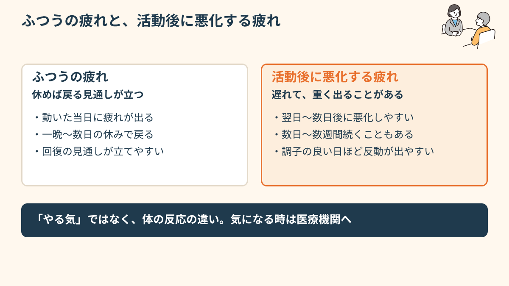
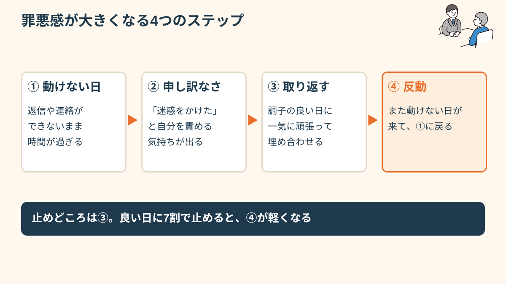
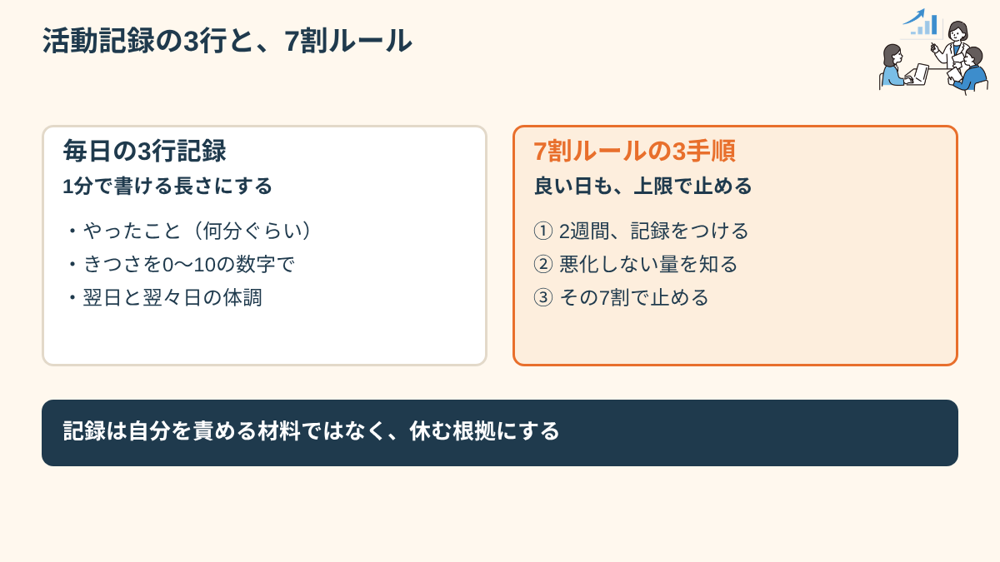
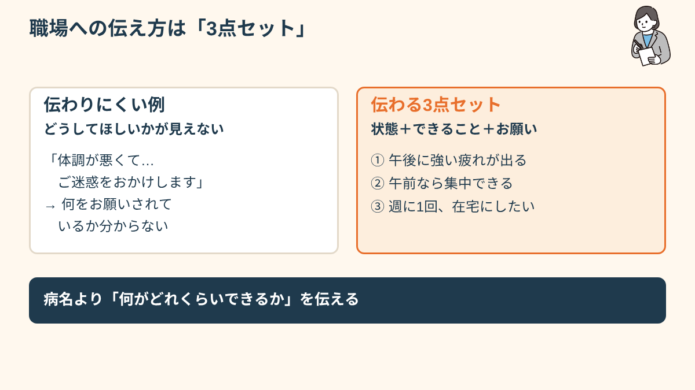
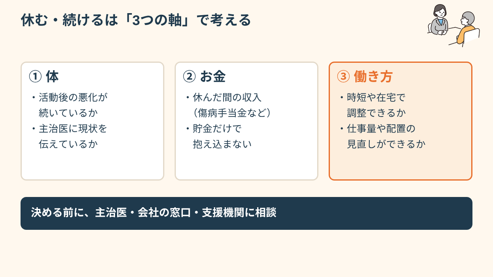

「やる気の問題」じゃない、という説明のしづらさ
慢性疲労症候群の特徴として知られているのが、わずかな活動の後に症状が大きく悪化する「労作後倦怠感（PEM）」と呼ばれる反応です。運動した直後ではなく、半日後や翌日、ときには2〜3日後に重く出ることもあるとされ、本人にとっても「何が原因で今こんなにつらいのか」が分かりにくいことがあります。
たとえば、月曜日に1時間の会議で発言しただけなのに、水曜日の朝になって急に起き上がれなくなる。そのときにはもう、原因になった月曜日の出来事は頭から抜けています。だから本人は「理由もなく、また動けなくなった」と感じ、周囲からは「ただの怠けでは」と見えてしまう。このすれ違いが、説明のしづらさの中心にあります。
一晩眠れば取れる一般的な疲労とは、回復のしかたそのものが違うと考えられています。休んでも休んでも芯の疲れが抜けず、長時間眠っても起きた瞬間からすでに疲れている。思考がまとまらない、人の話が頭に入ってこない、光や音がきつい、といった「頭の疲れ」を伴う方も少なくありません。この感覚は、経験したことのない人にはなかなか想像してもらえません。

診断についても触れておきます。慢性疲労症候群は、血液検査の数値ひとつで決まる病気ではなく、症状の経過を丁寧に聞き取り、ほかの病気を除外しながら診断が進められるとされています。そのため、受診から診断まで時間がかかったり、病院によって見立てが違ったりすることがあります。診断がつくまでの「原因が分からないまま責められる期間」が、罪悪感をいっそう深くしてしまうことも多いようです。診断や治療については、必ず専門の医師にご相談ください。
調査によれば、ME/CFSのある方の多くが発症前は活動的で、仕事に熱心だった人が多いとも言われています。だからこそ「前まで普通にできていたのに、なぜ今はこんな簡単なことすらできないのか」というギャップに、本人自身が一番戸惑っているケースが多いようです。
罪悪感が積み重なっていく仕組み
「今日も休んでしまった」「また早退してしまった」。その一回ひとつは小さな出来事でも、毎週、毎月積み重なると、本人の中では「迷惑をかけている自分」「使えない自分」というイメージが固まっていくことがあります。やる気はあるのに体がついてこないという矛盾は、外から見えにくいぶん、誰よりも本人が一番厳しくジャッジしてしまう傾向があるようです。
罪悪感は、多くの場合、次の順番で膨らみます。まず、動けなかった日に休みの連絡を入れる。次に、周りの仕事が自分の分まで回っているのを想像して申し訳なくなる。そして、調子が戻った日に「取り返さなければ」と頑張りすぎ、また反動で動けなくなる。この繰り返しの中で、「頑張る」と「壊れる」の間に休む余地がなくなっていきます。
周囲の何気ない言葉が、思った以上に重く刺さることもあります。「無理しないでね」という優しい言葉すら、「自分が無理をしているように見えているんだ」と受け取って落ち込んでしまう人もいます。本人が一番、無理をしないように気をつけているからこそ、そのギャップに敏感になるのかもしれません。
「会議の準備を前日にちょっと頑張ったら、当日の朝起き上がれなくなった。連絡しようとスマホを持つ手すら重くて、結局既読すらつけられないまま昼を過ぎてしまって、もうそれだけで自分を責めて泣いてた。サボってるわけじゃないのに、なんで自分はこんなに使えないんだろうって。」
「上司に『無理しなくていいよ』と言われるたび、逆に申し訳なくなる。無理してないつもりでも体が壊れていくから、結局また休む。それを繰り返すうちに、自分が一番この会社に必要とされていない人間だと思うようになった。誰も悪くないのに、しんどい。」
では、身近な人や職場の人は、どんな言葉をかけられるでしょうか。「無理しないで」の代わりに、「今日はどのくらいなら大丈夫そう？」「休んだ分の仕事は、こちらで見ておくね」と、具体的に引き受けてくれる言葉のほうが、受け取る側は気が楽になることがあるようです。「治った？」「そろそろ戻れる？」と回復を急かす聞き方は、本人の焦りを強めやすいので、避けたほうが安心です。

調子の良い日にやりすぎない。活動量の決め方
ME/CFSの就労では「頑張って乗り越える」より「使えるエネルギーの範囲内に活動量を抑える」という発想のほうが現実的だとされる場合があります。これはペーシングと呼ばれる考え方で、症状が出る一歩手前でブレーキをかけ、悪化のサイクルに入らないようにする工夫です。頭では分かっていても、いちばん難しいのは「調子の良い日」の過ごし方です。
体が軽い日は、やりたかったことが次々に浮かびます。溜まっていたメールを返し、書類を片づけ、ついでに買い物にも行く。夜には「今日は久しぶりにちゃんとできた」と嬉しくなる。ところが2日後、まるごと寝込む。この「良い日に使い切って、悪い日に倒れる」流れは、多くの当事者が経験すると言われ、仕事の量も体調の波も、かえって安定しにくくなる原因になりえます。
そこで役に立つのが、「今日の上限」を前もって決めておく方法です。次のような手順が紹介されています（進め方は主治医や支援者と相談してください）。
- 2週間ほど、毎晩「何をどれだけしたか」と「翌日・翌々日の体の状態」を3行ほどで記録する（時間や回数、体調を5段階で）
- 記録を見て、「この量なら翌日に響きにくかった」という日の活動量を探す
- その量の7割程度を「良い日の上限」にして、予定には余白を残す
- 上限に届く前に、座る・横になるなどの休憩を先に挟む（疲れてから休むのではなく、疲れる前に休む）
- 悪い日は「最低限これだけ」を決めておき、それ以外は手放す
記録に慣れてくると、「この作業は1時間で響く」「人と話すのは30分までが目安」「通勤を入れると午後の作業はほぼできない」といった、自分だけの目盛りが見えてきます。目盛りは病状とともに変わるので、数字そのものよりも「自分の体の感覚を事実で見直す習慣」が財産になります。
仕事でこれを実践する場面を、具体的に想像してみます。たとえば、在宅勤務で資料作成を任されたとき。「今日は2時間分」と決め、50分作業して10分横になる形で組みます。調子が良くて続けられそうでも、予定の量で切り上げる。そうして迎えた翌日の朝に、「昨日の上限で止めたから、今日も動ける」という実感を持てると、休む罪悪感が少しずつ「次の日の自分のための選択」に置き換わっていきます。

職場への伝え方と、働き方の選び方
職場には、症状の重さよりも「動いた後にどう響くか」を伝えると理解されやすいことがあります。「疲れやすいです」だけだと、誰にでもある疲れと同じに聞こえてしまうからです。
- 「動いた翌日や数日後に強く響くことがある」という体の反応パターンを伝える
- 「今日できる量」を都度相談できる関係を作っておく
- 在宅勤務・時短・業務量の調整など、選べる働き方を一緒に探す
伝えるときは、「できないこと」だけでなく「この条件ならできること」をセットにします。上司や人事との面談を想像した例を挙げます。
あなた「体の病気で、動いた翌日や翌々日に強く疲れが出ることがあります。出社が続くと、数日後にまとめて休むことになりやすいです。」
上司「それは大変だね。どうしたら働きやすい？」
あなた「週のうち出社を2日にして、残りは在宅にできれば、安定して成果を出せると思います。急に動けない日は、朝のうちにチャットで連絡して、その日にできる分だけに絞らせてください。」
こうした話し合いで、選択肢になりやすいのは次のような調整です。いずれも、会社の制度や規模によって実現できる範囲は変わります。
- 在宅勤務の日を増やす（通勤の消耗を避ける）
- 時短勤務や、始業時間の後ろ倒し（午前が特につらい方も）
- 締切のある業務を減らし、前倒しで進められる業務を中心にする
- 会議の時間や回数を絞る、オンライン参加を認める
- 調子が悪い日の連絡方法（チャットのみ、など）と代わりの人を決めておく
無理に続けることで悪化し、結果的に長期離脱せざるをえなくなるケースも報告されています。短期的に「頑張れた」ことよりも、長く働き続けられる量を維持することのほうが、結局は本人にとって楽になる場合が多いようです。

続けるか休むか、一人で決めない。お金と相談先の考え方
動けない日が増えてくると、「このまま続けるべきか、休むべきか、辞めるべきか」を、一人で決めようとしてしまいがちです。けれど、判断が必要なのは「体の状態」「お金」「働き方の選択肢」の3つで、どれも一人で調べ切るのは難しいものです。ここでは、時点を明記したうえで、どんな制度や窓口があるかを整理します（2026年11月時点の一般的な内容です。実際の要件や金額は、必ず各窓口で確認してください）。
休むとき：傷病手当金の考え方
会社の健康保険に加入している方が、病気やけがで仕事を休み、給与が十分に支払われない場合に、傷病手当金の対象になることがあります。一般には、連続して3日間休んだ後の4日目以降が対象で、支給期間は支給開始日から通算で1年6か月が上限とされています。ただし、加入先の保険や就業状況で条件が異なるため、休む前に会社の担当者か保険者に確認しておくと安心です。
長く続く場合：障害年金の考え方
障害年金は、病名そのものよりも、日常生活や仕事にどの程度支障があるかで見られるとされています。初診日の時点の加入制度や保険料の納付状況など、満たす必要のある条件があり、慢性疲労症候群の場合は認定の扱いが個別になることもあるとされます。「自分は対象になるのか」は、早めに年金事務所や、医療機関の相談員、社会保険労務士に聞いてみてください。聞いたからといって、申請しなければならないわけではありません。
働き方を探すとき：相談先の使い分け
相談先は、目的で使い分けると迷いにくくなります。
- 体の状態・診断・診断書：主治医、医療機関の相談員（医療ソーシャルワーカー）
- 休職・復職・配慮の相談：会社の人事・産業医、保健師
- 障害者手帳や福祉サービスの対象になるか：お住まいの市区町村の障害福祉の窓口（症状や状態によって扱いが異なるため確認が必要です）
- 働き方・仕事探し：障害者就業・生活支援センター、ハローワークの専門援助部門
- 体調に合う訓練の場：就労移行支援。通所の負担が大きい場合もあるため、体験や在宅での利用可否を事前に確認
「最初は休職するか辞めるかの二択だと思い込んでいました。病院の相談員さんに話したら、傷病手当金の確認、会社との面談の練習、在宅の働き方の相談先と、やることを3つに分けてくれて。全部を今決めなくていいと言われて、ようやく息ができました。」
体調の波が大きい時期は、仕事を探す・続ける判断を急がず、まず「休む手当」と「相談先」を確保することが先になる場合もあります。関連して、うつなどで回復途中の働き方を考えたい方はうつの回復期の仕事との付き合い方、障害年金と働くことの関係は障害年金をもらいながら働くときの考え方、体調の崩れを防ぐ仕組みづくりは障害のある方の体調管理も参考にしてください。
- 動けないのは気力や根性の問題ではなく、体の反応として知られている
- 症状は動いた直後ではなく、しばらく経ってから重く出ることがある
- 「無理しないで」という言葉が、逆に本人を追い詰めることもある
- 調子の良い日は、予定の7割程度で止める工夫がある
- 伝える内容は「動いた後にどう響くか」と「この条件ならできる」のセットが伝わりやすい
- 休む・続けるは、お金（傷病手当金・障害年金）と相談先を確認しながら、一人で決めない
